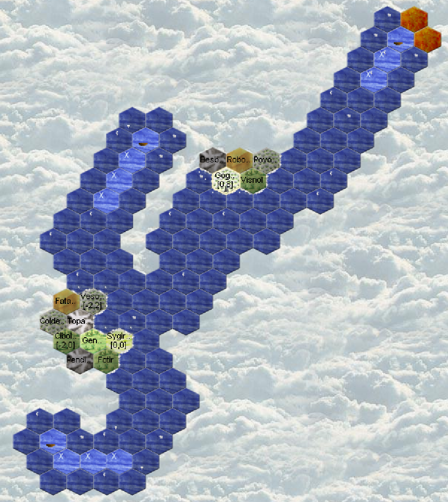

Aquarians: Runde 8
Turn 8
Found a new close neighbor!
This is the first turn where we can be attacked or robbed (assaulted)!
No coasts on the horizon but the firewall!
Crisis situation with neighbors

No visits from potential neighbors.
The Firewall
The crew of the Gin Fizzzz (p1n2) refuses to travel to firewall (4, 15).
Eressea is divided into multiple zones, commonly referred to as worlds.
These zones are separated by borders.
"Firewalls" typically serve as borders.
Firewalls can't be crossed.
Topares: meeting 2 neighbors, "Halbe Linge" and "Trolle, einige Steine tragend".
Both could work together. Sending a message to the troll. Interesting partner for an Aquarian (mining, quarrying, construction and solid front line)!
Actions
Zimrida (hha6) continues towards Vesolsinmul. Bodmelqart (4qmc) will follow the firewall a bit. Baldo (4qmk) will get closer to the north island coasts. Aqhat (t3zs) will go back up to our island.
Sygirfal
720 silver on Sygirfal We recruit a captain and start a new boat The rest of the money is kept for next week.
Diplomacy
That week I send my orders early, I have little time and I receive late a warning from the Halfling! He accuses me of hiding, that means moving with a stealthy unit (or in Hide faction) He writes to me with copy to the troll and another tribe. That doesn't smell good! Does he want to make others believe I'm a spy? I must absolutely defend myself quickly or it will become complicated! Is there another faction trying to hide by pretending to be me? (a demon?) I check well on the region if I don't see anything and if by chance I wouldn't have made an error. None. No stealth. Is(are) he(they) looking for a pretext to harm me? Anyway I can't do more, I can no longer modify my orders, the turn is launched in less than 4 hours and I don't have access to my computer or internet. It's my fault. I should have taken time to communicate more with him and not taken a friendly first contact for granted. If this goes badly, it will be my fault. When meeting a potential ally you really need to establish strong and regular contact.